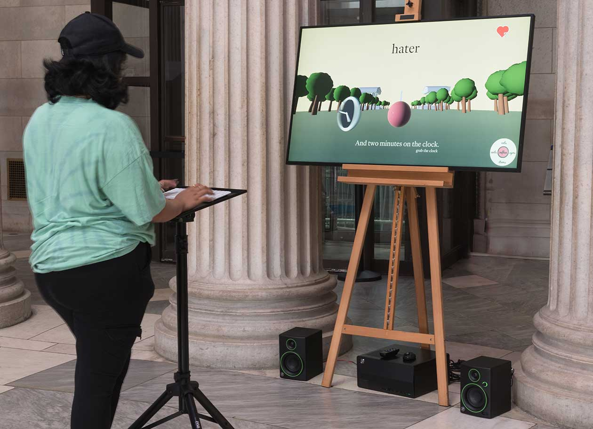

Sixth Amendment
In all criminal prosecutions, the accused shall enjoy the right to a speedy and public trial, by an impartial jury of the State and district wherein the crime shall have been committed, which district shall have been previously ascertained by law, and to be informed of the nature and cause of the accusation; to be confronted with the witnesses against him; to have compulsory process for obtaining witnesses in his favor, and to have the Assistance of Counsel for his defence.
Photo by John Berens
Peter Bradley
Nomologos, 2022
Computer software with high-definition video and sound
4 feet by 8 feet
Artist Commentary
Nomologos is a single-player video game about language and the law. It looks like an obstacle course, staged at the National Mall, which the player, acting as a ball of ink, is invited to complete. It differs from a traditional obstacle course in that movement is inferred from a sequence of words, provided by the player via keyboard input. A sequence of synonyms moves right, a sequence of antonyms left. Hypernyms jump; hyponyms duck. An unrelated sequence costs a life, of which the player has a limited supply on their way to the finish line.
Moving between signifiers in this way, the game is meant to be a meditation on the inherent flux of the law. Reflexively, we think of the law as something absolute and inviolable, made from moral truth, prepared by the careful work of reason. In reality, however, the law is made of language, that most yielding of materials, a thin membrane, oscillating in the play of powers. Our understanding of the Bill of Rights and all the liberties it protects is conditioned by the very structure of language, by the way that meaning is made and fixed.
Traditionally, we think of the dictionary as the repository of meaning, and, indeed, the definition of a word gives you something to hold on to on the way to understanding, but definitions are intrinsically superficial. A definition is like a picture of a house. It doesn’t consider the plumbing and the electric, the communication of rooms. It is not lived in, from the inside.
From the inside, language is more like a thesaurus. It’s a dynamic system of relations: of similitude and difference, of inclusion and exclusion, of echoes morphological and historic. A word acquires meaning against the differential net of all the others, and it keeps its meaning fixed covalently with its neighbors. Words are like atoms in the sense molecules of an era. They are like a man who is one person at work and another at home and restored to a former self entirely in the company of his childhood friends.
Linguists call these little verbal societies clusters, and in their association the coherence of meaning is sustained. Nomologos is an invitation to explore their bonds and boundaries. It is a puzzle whose solution demands a kind of semantic algebra. Across the sequence of signifiers that comprise the game, the player will encounter the core concepts of the Sixth Amendment—“speedy,” “public,” “impartial,” “vicinage,” “notice,” “witness,” “counsel”—and from these landmarks circumlocute the hermeneutic space of jurisprudence.
Photo by John Berens
Curator Commentary
Words are contingent, even those in which we invest a good deal of trust. Words can be circumvented and otherwise worked around. The Constitution constructs ways of being together from words, leaving us with an infrastructure ripe for use, abuse, and misuse. This plays out in the Sixth Amendment—though not found within the amendment’s language, the “trial penalty” Suja A. Thomas discusses sidesteps the intention of the Sixth for the vast majority of those accused of a crime. If the words guaranteeing us the right to a speedy and public trial are put in jeopardy by the threat of greater penalty from that very trial, what value does the Sixth Amendment hold for most accused?
Peter Bradley’s Nomologos considers an underlying tension of how to interpret the Bill of Rights as a whole and the ways in which the Sixth Amendment is interpreted in particular. We treat the Constitution and the Bill of Rights as “set in stone,” despite the changes in context, time, and everything else that has unfolded in the years since 1789. Can we assume the intentions behind the eighty-one words in the Sixth Amendment mean the same thing today they did twenty-three decades ago?
The gameplay of Nomologos is similar to that of an “endless runner”–style game: the player moves forward in a three-dimensional space attempting to collect rewards and avoid obstacles. Where it differs is in the control scheme. Rather than using buttons to move left, right, up, and down, the player types words semantically related to cardinal language within the scene. The layered cognitive load of using language to navigate space proves to be a compelling metaphor for a layperson’s attempts to navigate the fraught space of a jury trial.
Peter Bradley is a conceptual artist, whose recent work is about computers and metaphysics. Applied first to music and the concept of keys, and now to language and the notion of semantic similarity, his practice aims to test the limits of computation, to capture the meaning of an idea as its being is reduced to quantity. He lives in New York City and tours as a member of Japanese Breakfast.
1
Freedom of Religion, Speech, Press, Assembly, Petition
Congress shall make no law respecting an establishment of religion, or prohibiting the free exercise thereof; or abridging the freedom of speech, or of the press; or the right of the people peaceably to assemble, and to petition the Government for a redress of grievances.
2
The Right to Bear Arms
A well regulated Militia, being necessary to the security of a free State, the right of the people to keep and bear Arms, shall not be infringed.
3
The Housing of Soldiers
No Soldier shall, in time of peace be quartered in any house, without the consent of the Owner, nor in time of war, but in a manner to be prescribed by law.
4
Unreasonable Search and Seizure, Warrants, Probable Cause
The right of the people to be secure in their persons, houses, papers, and effects, against unreasonable searches and seizures, shall not be violated, and no Warrants shall issue, but upon probable cause, supported by Oath or affirmation, and particularly describing the place to be searched, and the persons or things to be seized.
5
Due Process, Self-Incrimination, Eminent Domain
No person shall be held to answer for a capital, or otherwise infamous crime, unless on a presentment or indictment of a Grand Jury, except in cases arising in the land or naval forces, or in the Militia, when in actual service in time of War or public danger; nor shall any person be subject for the same offence to be twice put in jeopardy of life or limb; nor shall be compelled in any criminal case to be a witness against himself, nor be deprived of life, liberty, or property, without due process of law; nor shall private property be taken for public use, without just compensation.
6
Rights of Defendents in Criminal Trial
In all criminal prosecutions, the accused shall enjoy the right to a speedy and public trial, by an impartial jury of the State and district wherein the crime shall have been committed, which district shall have been previously ascertained by law, and to be informed of the nature and cause of the accusation; to be confronted with the witnesses against him; to have compulsory process for obtaining witnesses in his favor, and to have the Assistance of Counsel for his defense.
7
Rights in Civil Cases
In suits at common law, where the value in controversy shall exceed twenty dollars, the right of trial by jury shall be preserved, and no fact tried by a jury, shall be otherwise re-examined in any court of the United States, than according to the rules of the common law.
8
Excessive Bails, Fines, or Punishment
Excessive bail shall not be required, nor excessive fines imposed, nor cruel and unusual punishments inflicted.
9
Additional Fundamental Rights of People
The enumeration in the Constitution, of certain rights, shall not be construed to deny or disparage others retained by the people.
10
Separation of Powers and Federalism
The powers not delegated to the United States by the Constitution, nor prohibited by it to the States, are reserved to the States respectively, or to the people.